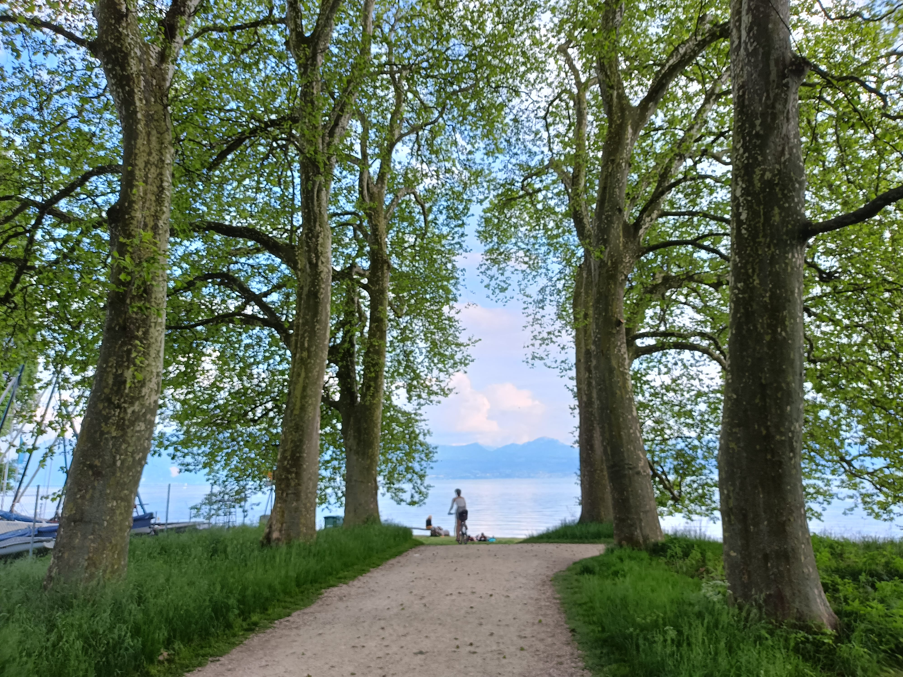
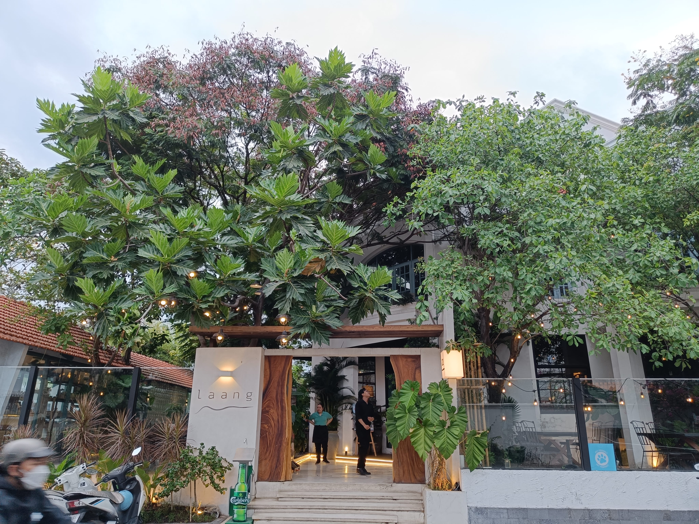
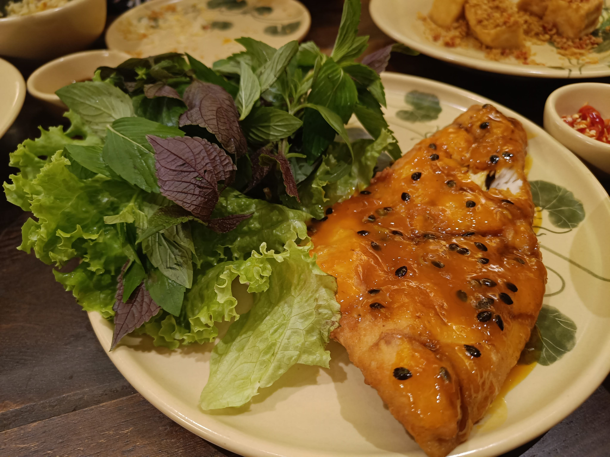
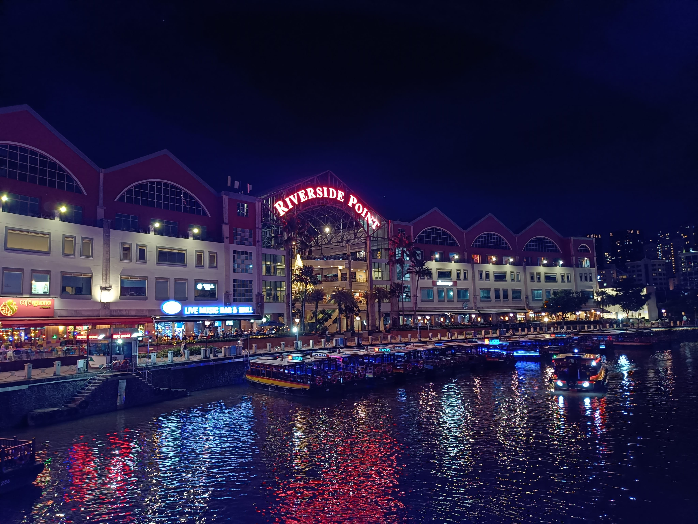
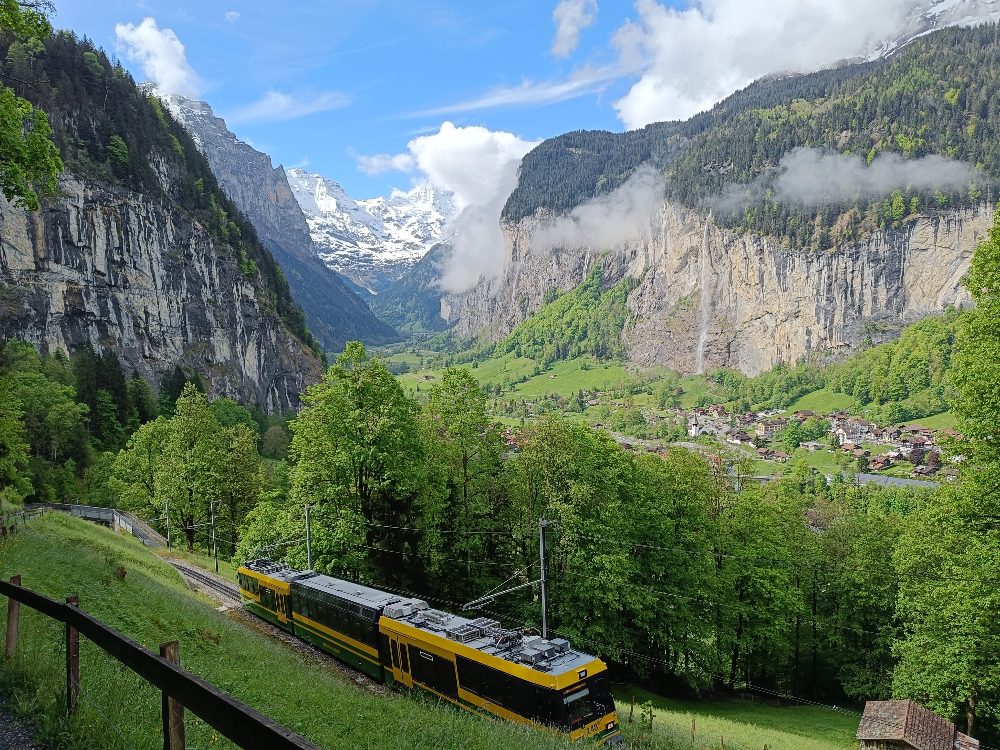
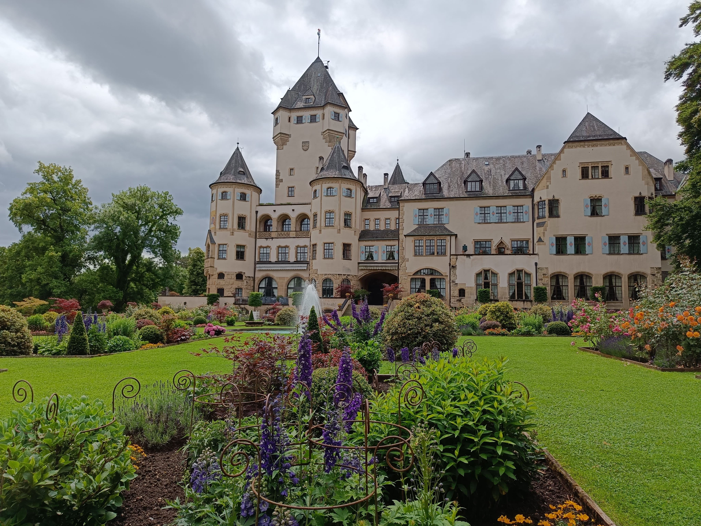
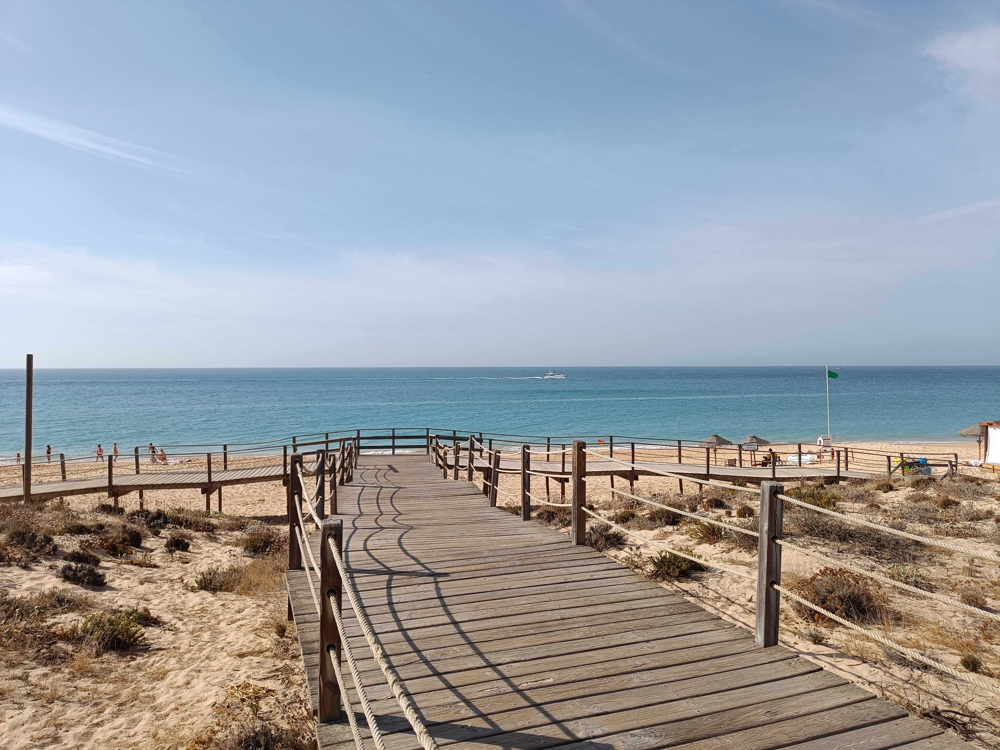
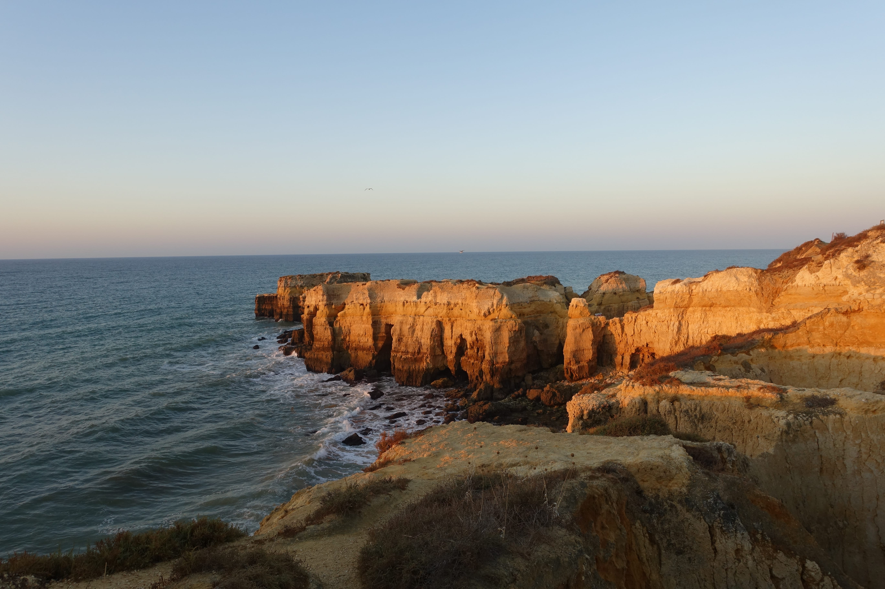
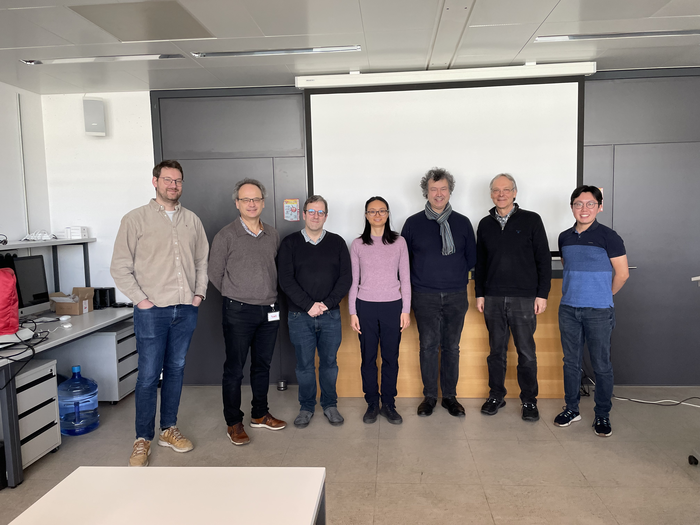

毕业了
前言
首先祝大家新春快乐！其次给关心我的亲友分享一个好消息：博士终于毕业了。这个事说大不大说小也不小。读博的旅程道阻且长，毕业的过程更是一言难尽。 起先是无尽的等待，之后是紧锣密鼓的筹备，最后一朝答辩，卸下所有重担。五年半的时光仿佛一下子远去，越来越模糊。趁还没有忘记，把这个经历记录下来。
2026年2月10日
今天是博士答辩后的第十二天，早上一直下着小雨，午饭后云层才开了缝，露出些许蓝天和一缕阳光。趁着雨停的间隙，我骑了车，打算去久违的湖边遛一圈。 从家到湖边一路下坡，经过洛桑大学的木林站，穿过隧道，循着小河叮叮当当的水声转至洛桑大学图书馆，夹道是两排高耸入云的斑点梧桐，一直延伸到莱蒙湖边。 树的尽头是亮晶晶的湖水，湖水的尽头是法国的青山。快到湖边的时候，梧桐树外左侧是一大片落满黄叶的绿草地；右侧是洛桑大学的户外体育场，有人在跑步。 工作日下午的湖边是什么样呢？这天是少有的机会可以慢慢骑车，左顾右盼，一探究竟。云层背后露出一片明亮的天空，光线洒在湖上，像镜面一样晃眼。 湖水比往日平静，连卷到沙滩上的波浪都充满慵懒。黑黑的小水鸟慢悠悠地拨着水纹，白白的大天鹅一头扎进水里找鱼吃。湖面上的鸟比湖边遛狗的人多。 雨后空气格外清新，我一口气骑到了洛桑附近的码头才转回来。最后一年忙得没有时间到湖边来，只在阳台上或者办公室窗户往有山的方向看看罢了。 有时候虽然得空，但总有读博这件事压在身上，无论到哪里都无法完全放松。虽然是同样的路线和风景，但第一次没有案牍劳形之忧，整个人都是轻快的。

背景
洛桑理工大学的博士时长大致是4年，每个组对毕业的具体要求各不相同，但毕业的程序是统一的。与其他大学不太一样，这里答辩分两次。 第一次是学术型的闭门答辩，参加人员是预先设定好的答辩团成员。 学术答辩通过后，还有一个公开答辩，任何人都可以参加（主要是同事和亲朋好友），更像是一个庆祝典礼。 闭门答辩自然是最重要的一关，通过之后表明可以颁发学位证书了；但是公开答辩也是正式程序，举行了公开答辩之后才能获得学位证书。
在获得博士导师的许可后，第一步是寻找答辩团的成员以及确定答辩时间。答辩团的成员包括自己的导师 （我有两个，一个导师一个副导师）、一名主席（来自本校的教授，负责主持、记录和做最终决定）、一名校内专家 （可以是来自瑞士的两所理工大学或几个联邦研究所的专家）和两名校外专家。 答辩团的三名专家负责评审博士论文的质量，以及在答辩时针对博士生所做的工作进行提问。他们对博士论文的反馈将提交给主席，由主席汇总后做出结论。
答辩时间在系统里确定之后，就正式进入了倒计时。博士论文的手稿最晚必须在答辩日期前5周提交。答辩团的成员则需要在答辩前2周完成论文评审并将意见反馈给主席。
答辩当日首先是博士生做一个30-45分钟的PPT演讲，总结博士几年的工作，然后是两轮问题环节。每轮每个专家都要提几个问题，博士生作答。 问题环节大约1个小时左右。之后博士生离开会议室，答辩团成员商定最后结论。最后主席邀请博士生回到会议室，公布答辩结果。 整个过程大约2个小时左右。我把答辩时间定在上午9:30，上午人的精力比较充沛，答辩完也基本到了午饭时间。
答辩通过后，最难的一关就过去了，剩下就是一些琐碎的程序：提交论文最终版本、论文出书、确定公开答辩日期、准备公开答辩PPT以及之后的晚餐 （也就是我现在所在的阶段）。
公开答辩由博士导师主持，还是先由博士生做30-45分钟的PPT演讲，这次内容与上次不同的是，这里重在让亲朋好友也尽量能听得懂所做的工作。 之后回答观众提出的问题。然后由博士导师讲述对博士生以及博士生所做的工作的看法，送上对未来的祝福，然后颁发学位证书。 最后是致谢以及邀请大家去吃庆祝晚餐。
确定毕业前的漫长日子
2024年9月
开始博士论文的搭建工作。这里需要解释一下，研究论文是总结某个具体课题里的工作最后发表在学术期刊上的文章，通常是以篇论，有短有长。 博士论文则更像是一本书，通常几百页。虽然都叫“论文”，但内涵不太一样。
写博士论文这本书不是一项轻松容易的工作，写法也因人而异。有的人博士期间所作的工作围绕一个主题，非常有连贯性， 那么他可以在四年间每天都写一点，最后编辑一下即可；我做的工作比较散，项目不是一开始就定了四年，有些课题是读博期间新发现的， 所以我的论文是模块化的，最终由发表的六篇论文整合而成。
写博士论文是一个单调枯燥的过程，为了增添一些趣味性，我打算不用LATEX语言（一种用来生成数学符号和公式的编程语言，常用于数学和工程论文的写作）， 而是用MARKDOWN语言来写。它的优势是可以灵活地选择输出文件的格式（网页版、PDF），而且页面设计非常灵活。 选它的一个考虑是网页版的生成速度比LATEX生成PDF快多了，而写一个几百页的大文件最要紧的是编译速度，因为要不断修改， 而每次改过之后如果要等好几分钟才能看到结果则非常低效。因此我的论文最后有一套源代码（用Git跟踪，Git: 一种代码的版本控制工具， 主要是储存代码的历史记录，以防丢失），可以用它导出网页版（即将上线，敬请期待）或者PDF版（供提交和打印成书）。
这个点子是跟我先生（一个软件工程师）讨论之后决定的，并由他于必要时提供技术支持。搭好框架之后一段时间没有再继续推进论文写作， 而是忙于已完成的第三和第四篇论文的发表，以及最后一个项目结尾和第五第六篇论文的撰写。我博士期间一直跟不同的研究组合作， 因为我们组的定位比较特别。我们的实验室就是机房，实验室里的仪器就是一台台服务器，我们的工作是在电脑上完成的。术业有专攻， 成像学离不开不同领域的合作，我合作的对象来自电气工程、生命科学以及计算科学。 平常的工作除了自己推进之外还要等合作者提供的实验数据以及与他们共同讨论结果，所以进展有时比较缓慢。 读博以及做研究不是每天都有进步，有一部分时间花在了等待、协商以及处理人际关系上。
2025年1月至2月
进入新的一年，第三篇和第四篇论文先后发表了。新年期间写了上一篇博文介绍过其中一篇的工作（还记得超分辨率显微镜和甜甜圈吗？） 那篇论文虽然正文只有四页，却包含了背后两年时间的研究。一个项目从一个有趣的问题开始，比如这个甜甜圈，我们的出发点是“为啥甜甜圈激发光最优？ 有没有更优的激发光图案？”为了回答这个问题，我们自己首先读了很多相关领域的论文了解这项成像技术的原理， 然后又联系维也纳生物中心的研究员（也就是这项技术的发明者之一），与他们讨论交流，期间我们还两次跑到维也纳（22年8月、23年11月）去参观他们的实验室。 到了项目后期出现了不同的学术见解和分歧时花了一段时间和解，直到最后论文写成，每个作者都放了绿灯，一共花了两年时间。 期间电脑模拟了几十上百次，程序增删了好几回，模拟结果出了一箩筐，分析也做了一大沓，最终千言万语凝聚成论文里的两张结果图。 这个项目是我博士期间最喜欢的一个，它探讨的问题有趣有意义，我们的结果和论证也非常充分。 后来这篇文章得到美国光学学会的好评被选入“光学聚焦”（每月只有两篇入选）并由同行写了一篇序言。
2025年3月至4月
继续推进最后一项工作以及第五第六篇论文的撰写。期间跟着我先生出差去了一趟胡志明市顺道又在新加坡待了几天，这次旅程总结成四个字非“美食之旅”不可。 下次再写一篇南亚游记讲讲这趟有意思的旅程。



2025年5月至8月
5月份的时候带我妈妈游了一圈瑞士和卢森堡，实现了带家人看世界的梦想。我们俩在家包饺子、到学校听讲座、在阿尔卑斯山徒步、坐火车游览不同城市， 这么多年第一次有机会好好在一起享受时光。之后我们三人开车一路从洛桑穿过法国到了卢森堡（给司机先生点个赞）。 在卢森堡见识了城区郁郁葱葱的森林和峡谷，与先生家人品尝当地美食，体验了一把全国免费的公交系统（下次再写一篇介绍一下这个比瑞士还小但是同样发达的国家）。 送妈妈从卢森堡回郑州后（这两个城市有直航飞机！），在卢森堡参加了一个会议，因甜甜圈论文获得了“最佳贡献奖”。


之后开始博士论文的准备工作，搜集整理筛选所有可用的资料（五年的工作量远超出发表在论文里大家能看到的那部分，还有很多是无法用书写形式展现出来的， 比如设计的程序和讨论的过程）。7月份提交了第五篇论文，3个月后它发表了。第五篇论文从有一个点子开始到不断地交流合作推进， 前后也花了将近两年时间，这篇论文是甜甜圈论文的衍生品，主题是为显微镜的点扩散函数系统地提供一套理论并开发一套高效的软件来准确计算和可视化它。
读博的过程中能力是循序渐进的。前两年刚起步，只做了一个课题（出了第一第二篇论文）。从第三年开始同时进行两个甚至三个课题， 而且每个都不一样，随时跳入某个课题的具体细节或者程序里的某个关键点，并在不同课题间转换自如，到最后成了家常便饭。
2025年9月至10月
这几个月一边忙第六篇论文的筹备、一边每天推进一点博士论文。
博士论文写作说容易也容易，已发表的六篇文章可以作为主体章节的底稿；说难也难，需要有一个好的主题把不同的工作联系在一起。 动笔之前需要想一个大纲：这六篇可以分为三组，每组有一个共同的主题，因此主体部分有三个章节。这三个章节之间的关系又是什么呢？ 我最终想到一个好的切入点是从成像的两个关键方面入手：分辨率和深度。这样的话前两章的主题就是提升成像深度， 最后一章则是关注突破光学衍射极限的超分辨率领域。这三章最终用一个什么样的大图景把它们都放进去呢？这就关系到论文的主旨怎么定。 如何把这些不同的话题联系在一起，找出它们的共同点，这是最难的部分。而这个部分需要自己去发现，我花了一个月整理出一个让自己满意的大纲， 又综合各方意见修改了好几轮。最后定的关键词是基于物理的模型、光学成像、数学建模和反问题。确定好大纲之后就有了骨架，接下来是丰满肌肉。 主要的写作工作分为两部分：第一是引言和背景部分；第二是糅合主体三章每章内部的两篇论文，以达到通顺流畅。
经过构思、查文献、写作和修改，10月中旬的时候引言和背景部分的初稿完成了，接下来就是发给副导师等待反馈意见。 趁这个机会去了一趟葡萄牙南部度假短暂休息了一下。欧洲大陆大部分都已经进入秋季，气温也降到10度以下了，大西洋岸边的度假村却还是日光灼人。 中午的时候户外泳池和海滨沙滩的长椅上躺满了“烤红薯”（把自己晒的红黑红黑的人）。这里的气候很不同，虽然靠海，沙滩上却是一片干燥的沙漠景象。 荒草和沙漠上修了弯弯曲曲的木板桥，可以徒步也可以骑车。海边的悬崖石壁形态各异鬼斧神工。最惊险的一天是乘观光船去看海豚， 当船离陆地越来越远直到陆地变成一条线时，我深深叹服几百年前那些航海先驱者的勇气。游船上激昂的音乐让人心潮澎湃， 凝望四周无穷无尽波涛翻滚的黑色海洋又让人心惊肉跳。在海洋上唯一能看到的动物是灰色的大海鸥，它们飞这么远在惊涛骇浪中捕鱼， 跟我在莱蒙湖见到的蓝色小海鸥不可同日而语。海上除了浪大风也很大，只穿了个短袖的我在刺眼的阳光下瑟瑟发抖。 幸运的是返航途中偶遇几条海豚，我们停船看海豚嬉戏时船员说海豚可以潜几百米深！不禁感叹只有这无边无际的海洋才是海豚开心的家， 又想到去过的海洋馆，才深深体会到对它们是多大的折磨。


启动毕业程序
2025年11月至12月
10月底的时候提交了第六篇论文，博士期间所有工作都已完成，只剩下写博士论文一件事情。11月份的时候终于确定了答辩团成员和答辩日期为1月29日， 因此论文提交的截止日期也确定了，12月25日，圣诞节那天。定下日子就终于看到了希望之光。最后这两个月就是紧锣密鼓地改进、修复细节以及一章章定稿。 我写好之后就给副导师发稿子，他给反馈意见，我再改，就这样一章一章改下来定了内容。然后先生又把我每章看了一遍，找找错字或者不通顺的语句，语言上润了色。 我最后又把每章一字一句地又通了一遍。
漫长的写作对人是巨大的考验，有时候连着几天写和改，不仅眼睛受不了，甚至一看到屏幕就会反胃。为了做到张弛有度，我特地找了一些小事让自己分分心。 先是听了一百二十回每回二十多分钟的《蒋勋讲红楼梦青春版》，听完之后不过瘾又接着听一百六十回每回一个多小时的《蒋勋精讲红楼梦》 （最后还没听完一半回目就已经毕业了）。非常感谢蒋老师的音频，不仅声音好听内容也非常有启发，要是没有这个消遣不知道怎么熬过来。 12月初跟一个小伙伴吃午饭时提到马上要交论文了，她惊讶地说：“你看起来怎么一点都不紧张？”我想了一下，都到这个时候了有啥好紧张的， 该写的都写完了，要是没写完紧张也没用啊。
12月19日是节假日前最后一个周五，大部分人之后就进入过节模式了。我在这周四与导师敲定了最终章的内容，周六周日两天进入最后调细节阶段。 周日晚上我最后确定了一遍内容，先生最后帮我查了拼写和格式，终于在深夜提交了，一百九十页。
第二天我们收拾了行李坐上了去卢森堡的火车。经过几个月漫长的写作，在准备答辩之前需要好好休息一下。节日期间完全把大脑调成休假模式， 不想工作。圣诞晚餐时先生的爸爸问：“毕业典礼时需要我们带几瓶红酒过去？”我有点哭笑不得，感念对我的关心的同时又说：“等我先过了答辩这一关吧。”
准备答辩
2026年1月
1月2日，先生的爸爸开车送我们到火车站，临行前充满鼓励地说：“加油，祝你好运！” 到家后的周末，与之前类似，为了让自己分分心， 我在厨房搞了一个小项目：自己做泡菜。买来的泡菜好吃但是有点贵，我一直想尝试看能不能实现泡菜自由，就用两颗小大白菜做了两小罐。
这个月无论工作日和周末，每天都在制作PPT。5日到13日的第一周在想大纲以及做第一版。挑战在于如何把5年多的工作量汇聚到短短的45分钟内。 内容实在是太多了，因此我打算第一版先不论时间，只管把自己想讲述内容先呈现出来。PPT不是简单地把论文里的内容重复一遍， 而是要把所做的工作讲故事一样条理清晰地讲给专家们听，除了文字还要有好的配图和动画（来自先生的经验）。这一版最后做了八十多页。
在制作主体内容的同时还要准备辅助材料，这部分主要是一些技术细节，为问答环节做准备。事先不知道专家会问什么问题，因此这部分的材料尽可能越充分越好。 16日第一次与副导师试讲第一版，时间在1个多小时，讲的过程也发现了一些磕巴的地方。第一版总是最难的，之后就是修改。 为了控制在45分钟之内，首先要舍掉一些内容，最终决定把第五篇论文的内容省掉。其次是每页的设计，把细节搬到辅助材料里，减少每页信息的密度。 再给每部分定个大致时限：开头5分钟，结论5分钟，三章每章10-13分钟。每章在十几分钟内把两年的工作讲清楚，既得简要地铺好背景， 又得突出自己的贡献，是很大的挑战！修改了几遍之后最终主体共有六十页，总算可以满足时间上的要求。
17日到21日在家与先生排练，他边听边计时边记笔记。第一次排练一直盯着PPT，因为内容还不够流畅，PPT与讲话的自然流程不太吻合。 第二天白天我根据昨天的笔记先把内容改好，然后自己一页一页练，大声讲出来看哪里不通顺。完全通了之后再穿起来一部分一部分练熟。 等到晚上第二次排练的时候，先生说比上次好多了，PPT成为提示而不是限制，每页的内容都熟记于心了。 18日泡菜开坛了，又酸又辣，不知道算不算成功，但是真好吃！
之后几天准备问答环节的问题，这其实比主体部分还要难，不仅要求我能解释我所熟悉的内容，还要能回答这之外的相关问题。 我自己想了一些记录下来，试着回答；副导师也问了一些问题，我们讨论了一下应对对策。在准备过程中我一直把答辩这件事看成考试， 一定要把问题全部回答上来，而问题又是未知和无尽的，所以很焦虑；副导师说，这是一次学术交流和对话，我有所体会后慢慢转变了想法。 最终我把重点放在我所知道的内容上，剩下的随机应变，在与先生和副导师练习问答的过程中逐渐找到从不同角度回答问题的思路，有渐入佳境之感。 最终我把准备的辅助材料又分了分类，最要紧的六十多页放在主体内容之后同一文件中；剩下的四十多页放在另外一个文件中。
在准备材料的过程中，一个慕尼黑的前辈合作者告诉我说，博士答辩是她生命中最难忘的一天之一，“没有人比你更了解自己的工作，大胆地展现自己吧！” 我答辩那天也正如她所说，因为自信所以一切都很顺利。
22日第二次与副导师排练，这次基本上定了内容，又准备了几个问答环节可能遇到的问题。剩下几天依旧是准备辅助材料，力求主体内容上每个关键词都能解释清楚。
27日与组内其他人进行了一次实地排练，这次时间控制得很好，也模拟了一下问答环节。除了排练内容，也检验了硬件设备。 发现会议室的电视屏分辨率比较低，与电脑的连接也时常中断。
28日这天吃过午饭，先生和我来到会议室为第二天做最后的准备工作。先把桌椅安置好。接着把连接线盘好，连接终端用胶带固定在讲桌上增加稳定性， 又测试了电视和投影仪的质量，最终选择用投影仪。之后副导师带来了激光笔测试了一下，又帮忙把会议室收拾整齐。 我们俩边聊天边洗好擦干第二天给大家用的咖啡杯，又把咖啡机清洗了一遍。最后我在会议室的门上贴上了请勿打扰的标识， 最后总览了下室内布置，直到满意了才关灯离开。两星期以来白天黑夜准备答辩材料已经成了大熊猫，因此28日下午我就回去睡了一觉。 28日晚最后顺一遍PPT，晚饭捡清淡的吃，定了早上7点的闹钟。
答辩日
29日先生请了一天假，随叫随到必要时提供帮助。早饭时我一直紧张，心跳加速手心冒汗。饭后收拾了东西，我们俩不紧不慢地走到学校。 这周一直在下雨，前一天下了大雨，非常冷。今天是唯一难得的晴天。这条走了无数次的路，今天慢慢走过去倒让我无法控制的紧张情绪缓和了下来。 9点钟我到了会议室，先生帮忙把电脑和投影仪安置好，我测试了一下PPT和激光笔。先生看一切就绪，就去我办公桌前等候。
副导师随后到了，这段时间他一直负责联系和安排答辩团的专家们这些后勤工作，好让我集中精力在答辩上。 9点一刻他去楼下接待昨晚从法国赶来的专家们。望着空空的会议室，我突然非常紧张，于是走了出去平复心情。十分钟后回去，会议室已经热闹起来。 教授们在互相打招呼，我跟每个人握了手问好（前一天还练习了几遍他们姓名的发音，法语名好难念）。在友好的氛围里，我不再不紧张了。
9点30分，主席开场，介绍答辩流程。由于一直没睡好，突然一阵头晕目眩，我扶了一下讲桌缓了一下，等站定时也刚好到了开始主题演讲的时候。 受到专家们不时点头微笑的鼓舞，整个过程完全没有怯场。最怕公开演示每次都紧张的我从没有像今天这样挥洒自如，讲完后自己也吃了一惊。 紧张是自然的，因为面对的都是经验丰富的教授们；这次不紧张主要得感谢他们营造的充满友善和鼓励的氛围。
第一轮问答的时候，每个专家都先总结他们对博士论文的看法（给了我一个喝水的机会）。每个人的评价都很积极，我一边听一边向他们致谢。 后来想想，这个短暂不到一分钟的评价时间无形中给了我很大的自信，所以回答问题的时候不会紧张，能更好地专心于学术交流。 第一轮问答主要聚焦在PPT上的内容，每个人提了5个左右的问题。第二轮主要是高层次的问题，不再关注细节，而是对读博过程、领域前景和不同方向的看法， 以及与他们所在领域的相关性。最后真正成了一场愉快的学术交流会，而不是之前担心的诘问和责难（听人说过一些不太愉快的答辩经历，让人很担心）。 我准备的六十多页辅助材料只用到了两页。
之后我离开会议室，答辩团讨论并得出结论，没有很久就通知了结果。因为整个过程进行得顺利，公布结果的时候我并没有异常欢喜或者泪流满面。 组里的成员都来道贺，说：“这下可以放松了！” 我那天其实没有很大的感受，可能是累太过有点木。
我和答辩团的成员们去洛桑湖边的一个餐厅吃了午饭，七个人挤在一张小圆桌上。中午的阳光非常好，靠窗的地方热的让人出汗。 这个冬日里明媚暖和的午后以及蓝天白云湖光山色为这次答辩画上了句号（先生和组内的成员去了学校餐厅吃了午饭）。

平静
由于高度紧张，人其实不是一下子放松。答辩那天是周四，那天晚上我其实睡的比之前还少，过了几天才慢慢恢复了正常睡眠时间。 能开始感到开心是周日那天，早上和先生走在去健身房的路上，看到阳光下远处的雪山，脱口而出：“哇，终于把学上完了！明天不用去上学了！”
新年前夜我和先生家人去一个中餐馆吃年夜饭，饭后送了幸运饼干。我打开一个看：“You are on the way to the top.” 心想还真是很应景。又打开一个看：“The right word at the right time brings clarity.” 对答辩而言还算是很贴切的建议。 我把两张小纸条带回了家，一直放在电脑屏幕下。它们看着我从博士生变成了博士。
相信大家看得出我的毕业旅程主要得感谢两个人的慷慨支持，一个是我的副导师，另一个是我先生。我的副导师其实只比我大一岁， 我入组开始读博的时候他刚博士毕业在我们组做博后，现在是初级研究员。如果没有他的带领，这个博士很难读下去。 我先生则是幕后英雄，他在方方面面无论是工作还是生活上都提供了很大帮助，没有他陪我度过困难的日子，这个博士很难读到头。
庆祝时刻
剩下最后一个环节，公开答辩。日期定在我生日那天：3月13日17:00（北京时间14日0点），想要远程参加的朋友们请私信我你的邮箱。 感谢大家的支持和鼓励！新年快乐。